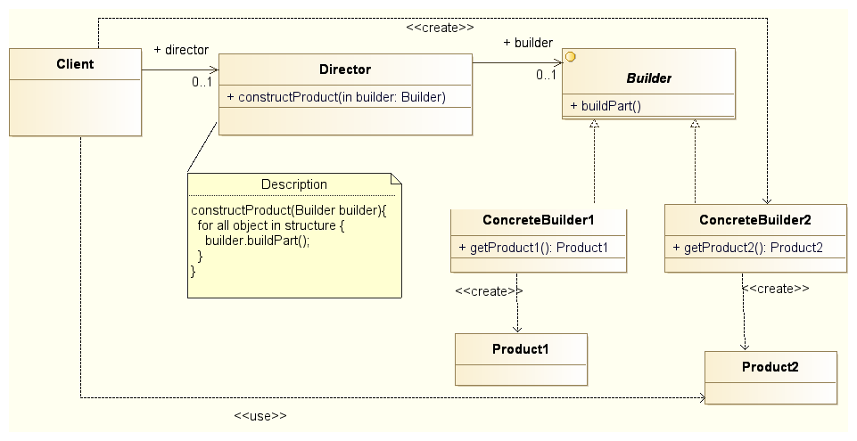

Softverski obrasci i komponente
Kreacioni obrasci
Prof. dr Igor Dejanović (igord at uns ac rs)
Kreirano 2023-01-16 Mon 18:15, pritisni ESC za mapu, m za meni, Ctrl+Shift+F za pretragu
Sadržaj
1. Fundamentalni obrasci
1.1. Fundamentalni obrasci
- Obrasci koji se koriste za izgradnju složenijih obrazaca.
- Često podržani programskim jezikom.
2. Delegation
2.1. Delegation
- Opšti način proširenja funkcionalnosti klase ili objekta.
- Koristi se u situacijama kada nasleđivanje nije dovoljno fleksibilno, posebno u situaciji kada programski jezik omogućava samo jednostruko nasleđivanje.
- Dinamičko proširenje pri instanciranju klase definisanjem delegata.
2.2. Primer problema

2.3. Primer rešenja

2.4. Struktura obrasca

2.5. Primer
interface I {
void f();
void g();
}
class A implements I {
public void f() { System.out.println("A: doing f()"); }
public void g() { System.out.println("A: doing g()"); }
}
class B implements I {
public void f() { System.out.println("B: doing f()"); }
public void g() { System.out.println("B: doing g()"); }
}
class C implements I {
// delegation
I i = new A();
public void f() { i.f(); }
public void g() { i.g(); }
}
// normal attributes
public void toA() { i = new A(); }
public void toB() { i = new B(); }
public class Main {
public static void main(String[] args) {
C c = new C();
c.f();
// output: A: doing f()
c.g();
// output: A: doing g()
c.toB();
c.f();
// output: B: doing f()
c.g();
// output: B: doing g()
}
}
2.6. Kada koristiti?
- Nasleđivanje je statička veza. Potrebno je da objekat menja klasu u vreme izvršavanja.
- Potrebno je simulirati višestruko nasleđivanje. Delegator može imati više delegata.
- Želimo da nasledimo određenu klasu ali ona nije pod našom kontrolom. Delegacija je u tom slučaju bezbednija jer nas štiti od nekompatibilnih promena nadklase.
3. Interface
3.1. Interface
- Želimo da učinimo klijenta nezavisnim od klasa koje obezbeđuju servis tako da možemo izmeniti klase bez uticaja na klijenta.
- Servisne klase već nasleđuju neke klase a višestruko nasleđivanje nije podržano.
3.2. Struktura obrasca

3.3. Primer

3.4. Šta dobijamo?
- Servisna klasa može biti zamenjena bez uticaja na klijenta.
- Servisna klasa može implementirati više interfejsa i nasleđivati proizvoljnu klasu.
4. Interface and Abstract Class
4.1. Interface and Abstract Class
- Proširenje Interface obrasca.
- Želimo da klijenta učinimo nezavisnim od hijerarhije klasa koje implementiraju servis na takav način da možemo menjati klase koje implementiraju servis bez uticaja na klijenta.
- Istovremeno želimo da definišemo apstraktnu implementaciju servisa tako da konkretni servisi mogu da redefinišu/dopune baznu implementaciju.
4.2. Struktura obrasca
4.3. Primer

4.4. Šta dobijamo?
- Konkretan servis može biti baziran na apstraktnoj implementaciji ali i ne mora. Dovoljno je da implementira interfejs servisa.
- Servisna klasa može implementirati više interfejsa i može nasleđivati proizvoljnu klasu.
- Apstraktna klasa obezbeđuje bazičnu implementaciju čime se razvoj novih servisnih klasa ubrzava.
5. Kreacioni obrasci
5.1. Kreacioni obrasci
- Apstrakcija i lokalizacija procesa instanciranja objekata.
- Čine sistem nezavisnim od načina kreiranja i kompozicije objekata.
5.2. Bazične osobine
Bazične osobine kreacionih obrazaca su sledeće:
- Enkapsuliraju znanje o konkretnim klasama koje sistem koristi.
- Skrivaju način na koji se vrši instaciranje klasa i kompozicija objekata.
5.3. Katalog kreacionih obrazaca
Prema [1] kreacioni obrasci su sledeći:
- Factory Method
- Abstract Factory
- Prototype
- Builder
- Singleton
6. Factory Method
6.1. Factory Method
- Želimo da odvojimo klijenta od konkretne implementacije putem Interfejsa.
- Želimo da klijent kreira objekte na takav način da “ne zna” koju konkretnu klasu instancira.
6.2. Struktura

6.3. Šta dobijamo?
- Instanciranje konkretnih objekata je lokalizovano. Programski kod nije jako spregnut sa tipom konkretnih instanci.
- Klasa može delegirati kreiranje konkretnih objekata koje koristi na svoje podklase čime se postiže veća fleksibilnost.
6.4. A šta gubimo?
- Relativno veliki broj klasa.
- Svaki novi Proizvod zahteva novog Kreatora.
6.5. Demonstracija obrasca Factory Method na primeru u Javi
7. Abstract Factory
7.1. Abstract Factory
- Proširenje Factory Method obrasca.
- Kreiranje familije objekata sličnih po funkciji koju vrše u aplikaciji pri čemu klijent (objekat koji ih koristi) “ne zna” konkrente klase objekata.
7.2. Struktura

7.3. Šta dobijamo?
- Instanciranje familije konkretnih objekata je lokalizovano.
- Programski kod nije jako spregnut sa tipom konkretnih instanci.
- Promena familije konkretnih instanci moguća je izmenom programskog koda na mestu gde se instancira konkretna fabrika objekata (najčešće jedna linija koda).
- U određenim slučajevima moguća je dinamička promena fabrike objekata (npr. Swing PLAF).
7.4. A šta gubimo?
- Relativno veliki broj klasa.
- Svaki novi Proizvod zahteva novu metodu u svim Kreatorima i svaka nova familija proizvoda zahteva novog konkretnog Kreatora i nove konkretne proizvode.
8. Prototype
8.1. Prototype
Kreiranje objekta kopiranjem već postojeće instance.
8.2. Struktura

8.3. Šta dobijamo?
- Eliminišemo potrebu za postojanjem kreator klasa i njenih naslednica pri korišćenju Factory Method dizajn šablona - smanjuje se broj potrebnih klasa.
- Ako je instanciranje objekata previše “skupo” sa stanovišta potrošnje procesorskog vremena i memorije, kloniranje već kreiranih objekata može dovesti do ubrzanja i smanjenja potrošnje memorije.
- Ukoliko nam trebaju instance objekata čije stanje se razlikuje od inicijalnog ali je slično već postojećim jednostavnije je kloniranje postojećeg, sličnog, objekta i izmena potrebnih atributa od kreiranja i pune inicijalizacije novog objekta.
8.4. Na šta treba obratiti pažnju?
- Kloniranje se najčešće realizuje tzv. “dubokim kopiranjem” (eng. deep copy).
- Javina clone operacija je realizovana kao “plitko kopiranje” (eng. shallow copy).
8.5. Demonstracija obrasca Prototype na primeru u Javi
9. Builder
9.1. Builder
Konstrukcija složenih objekata podelom nadležnosti na onoga ko “zna” kako treba napraviti strukturu složenog objekta i onoga ko “zna” kako treba kreirati pojedinačne delove.
9.2. Struktura

9.3. Šta dobijamo?
Razdvajamo konstrukciju složenog objekta (najčešće Composite) od njegove reprezentacije tako da isti postupak izgradnje može rezultovati različitim reprezentacijama.
9.4. Kada koristiti?
- Ako je potrebno učiniti algoritam za kreiranje složenih objekata nezavisnim od konkretnih delova koji sačinjavaju objekat.
- Ako proces konstrukcije mora obezbediti različite reprezentacije objekta koji se izgrađuje.
10. Singleton
10.1. Singleton
- Potrebno je da postoji samo jedna instanca klase u sistemu. Na primer: logger, registar, jedinstvena konekcija ka bazi i sl.
- Jedinična instanca mora biti dostupna svim klijentima.
10.2. Struktura

10.3. Šta dobijamo?
- Kontrolisani pristup jedinstvenoj instanci.
- Nasleđivanje klase jedinstvene instance i omogućavanje rekonfiguracije sistema i u vreme izvršavanja (run-time).
- Ako je naknadno potrebno, može se obezbediti postojanje više od jedne instance. Na primer, Connection Pool.
10.4. Napomena
- Singleton se danas smatra anti-obrascem.
- Dva glavna razloga:
- Singleton je globalni objekat – globalne varijable loše utiču na kvalitet dizajna i na konkurentnost u kontekstu višenitnog programiranja.
- Singleton se teško mock-up-uje (klijentski kod je čvrsto spregnut sa Singleton objektom) pa je testiranje koda koji ga koristi veoma teško. Ovaj problem se može rešiti korišćenjem Dependency Injection obrasca.
11. Literatura
- E. Gamma, R. Helm, R. Johnson, and J. M. Vlissides, Design Patterns: Elements of Reusable Object-Oriented Software, Addison-Wesley Professional, 1994
- M. Grand, Patterns in Java: A Catalog of Reusable Design Patterns Illustrated with UML, John Wiley & Sons, Inc., vol. 1, 2002